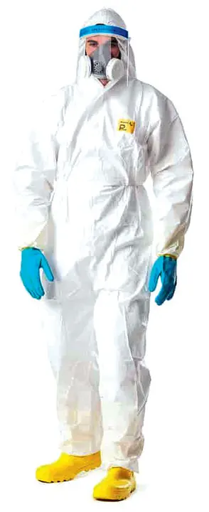

Dromex · Vestuário de protecção
Fato de Protecção Descartável Tipo 5/6
Código: PROMAX
Fato macacão descartável
- Receba a cotação por WhatsApp ou e-mail
- Junte vários produtos na mesma lista
Características
- Fato macacão descartável
- Tecido de polietileno laminado microporoso de fiação com costuras ligadas
- Pés e cintura dos pulsos elásticos
- Capuz escondido (polietileno de alta densidade)
- Fechamento frontal com zíper
- Dromex® Promax ™, Tipo 5 e Tipo 6, macacão descartável protege o torso, os braços, as pernas e a cabeça do usuário dos perigos de borrifos leves e respingos de produtos químicos líquidos, contacto de partículas finas e dissipação electrostática
- O macacão Promax ™ é leve e descartável que apresenta um laminado de polietileno microporoso que é macio e respirável e fornece um alto nível de gerenciamento de umidade
- É resistente a respingos e poeira nociva, não solta fiapos e é ideal para uso em ambientes não contaminados (por exemplo, salas limpas) ou em manutenção geral
- As áreas típicas de uso dependem do risco potencial e da exposição do macacão
- O Promax é adequado para uso industrial, como remoção de amianto, atendimento a acidentes, exposição a fibras, ambientes alimentícios e farmacêuticos, montagem electrônica, pintura e pulverização
Normas e tamanhos
S / M / L / XL / 2XL / 3XL